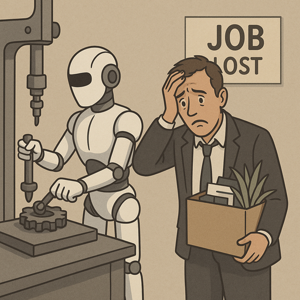
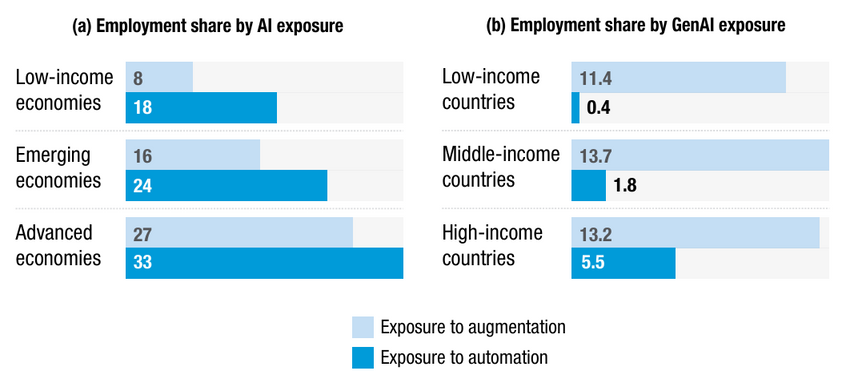

In today's world, artificial intelligence is everywhere. Its rapid rise has sparked important questions about the future of work and employment. As AI becomes more capable, many people are asking a pressing question: "Will AI take my job?" This is not merely speculative worry—it reflects genuine concerns about the pace of technological change. To explore this question rigorously, I reviewed the academic literature on AI's effects on employment and labor markets, which offers nuanced insights into how automation might reshape work across different economies and sectors.
Early insights on AI and unemployment
One of the most striking aspects of this literature is how long researchers have been studying AI's employment effects. Nilsson (1984) examined AI's potential impact on employment and argued that AI development is more radical than previous automation technologies, which could create genuine unemployment risks. However, Nilsson also noted that unemployment might paradoxically have liberating effects, and he cautioned that the technology was still in early stages—suggesting researchers in 1984 believed full AI maturity was still one or two generations away. The long time horizon he envisioned has proven prescient in some respects, yet the pace of recent advances has accelerated considerably.
By reinstating AI, we can prevent unemployment, create new jobs, and still increase productivity.
Two types of AI and their divergent effects
More recent research distinguishes between two fundamentally different kinds of AI, a distinction crucial to understanding employment futures. Acemoğlu and Restrepo (2019) divide AI technologies into two categories. The first is automation-focused AI, which increases productivity but can simultaneously reduce labor demand, leading to job displacement. The second is task-augmenting AI, which creates new tasks and jobs for workers, allowing productivity gains while preserving employment opportunities. This distinction matters because it shows that not all AI poses the same employment risk; the design and deployment of AI systems can either displace workers or empower them.
Empirical testing of this framework strengthens the case for differentiation. Georgieff and Hyee (2022) conducted a cross-national study of AI exposure and employment in 23 OECD countries. Their findings were nuanced: they found no simple negative relationship between AI exposure and overall employment growth. Instead, they observed that occupations with high levels of computer use experienced faster employment growth, even when exposed to AI. Conversely, occupations with low computer use saw declining hours worked. This pattern aligns with the idea that AI drives partial automation, pushing workers toward higher-value-added tasks within their roles.

Generative AI and uneven exposure
The emergence of Generative AI (GenAI)—technologies that create new content such as text, images, videos, and music—adds another layer of complexity. According to the OECD, GenAI exposure patterns differ notably from traditional AI. Workers with higher education levels and in more complex occupations face greater exposure to GenAI, but they also have better prospects for augmentation and skill development. The picture across economies is striking: advanced economies show higher overall AI exposure due to the structural complexity of their labor markets. This geographic disparity matters profoundly for policy: workers in developing economies may face different risks and opportunities than their counterparts in wealthy nations.

The UN's Technology and Innovation Report (2025) provides a comprehensive view of these differences. AI exposure varies significantly by national income level. Advanced economies face higher AI exposure overall, while developing economies show different patterns in both traditional AI and GenAI exposure. The report emphasizes that while higher-skilled workers in wealthy countries may benefit from augmentation, lower-skilled workers in both developed and developing nations face greater displacement risk.
Toward policy and personal protection
The evidence from this literature review points to a complex reality. There is genuine consensus among researchers that AI poses unemployment risks, yet the threat is neither uniform nor inevitable. The type of AI developed and deployed matters enormously: we can choose to invest in task-augmenting technologies rather than pure automation. Workers can strengthen their digital literacy and computer skills to reduce their vulnerability. Policymakers must account for how AI exposure differs across economies and skill levels when designing labor market policies.
As AI continues to advance, some job categories will undoubtedly face disruption. Yet history suggests that technological change, while painful for some workers, can also create new opportunities. The question is not whether AI will change employment—it will—but whether societies can manage that transition equitably. Investing in education, reskilling programs, and task-augmenting AI development can help ensure that technological progress benefits workers as well as employers. The future of work depends not only on how AI evolves, but on the choices we make in governing its deployment.
Selected references
- Acemoğlu, D., & Restrepo, P. (2019). The wrong kind of AI? Artificial intelligence and the future of labour demand. Cambridge Journal of Regions, Economy and Society. https://doi.org/10.1093/cjres/rsz022
- Georgieff, A., & Hyee, R. (2022). Artificial intelligence and employment: New cross-country evidence. Frontiers in Artificial Intelligence, 5, Article 832736. https://doi.org/10.3389/frai.2022.832736
- Nilsson, N. J. (1984). Artificial intelligence, employment, and income. AI Magazine, 5(2), 5–14. https://doi.org/10.1609/aimag.v5i2.433
- United Nations Conference on Trade and Development. (2025). Technology and innovation report 2025: Inclusive artificial intelligence for development. United Nations. https://unctad.org/publication/technology-and-innovation-report-2025-inclusive-artificial-intelligence-development